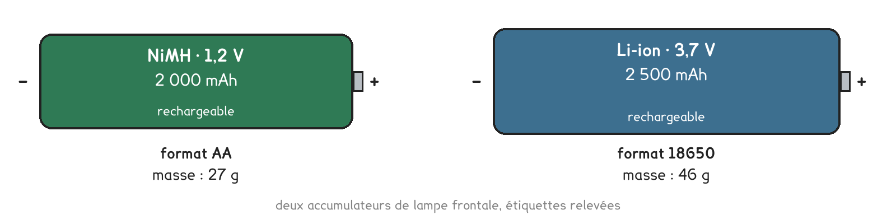
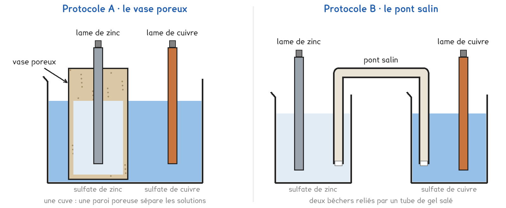
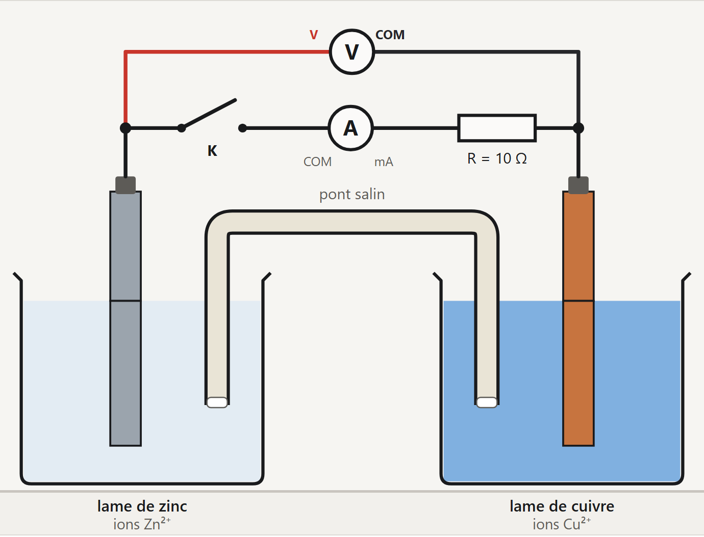
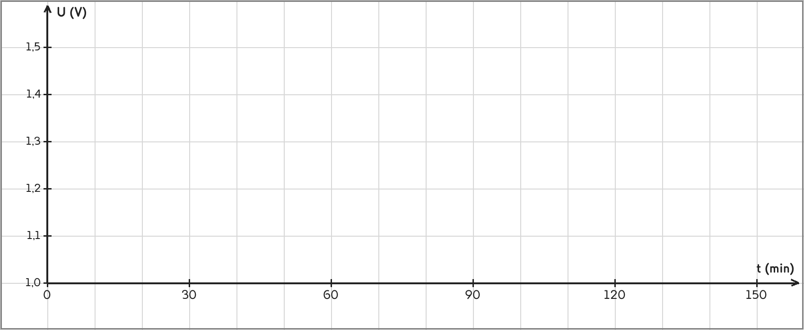

Tle Bac Pro · MELEC, CIEL, OBM, CTRM · TP sur simulation SIM-05
Qu'est-ce qui s'use dans une pile quand elle débite, et quelle part de l'énergie de charge un accumulateur rend-il ?
4 figures
Sujet. Une lampe frontale fonctionne avec trois piles AA jetables, ou avec trois accumulateurs rechargeables du même format. La pile finit au bac de collecte ; l’accumulateur repart au chargeur des centaines de fois.
Problématique : qu’est-ce qui s’use dans une pile quand elle débite, et quelle part de l’énergie de charge un accumulateur rend-il ?
La simulation. Ouvrir « Pile et accumulateur » : le fichier pile-accumulateur.html, sur l’ENT ou la clé du professeur.
Dans une pile zinc-cuivre, chaque lame plonge dans une solution de ses propres ions.
a) Sur chaque lame, une transformation se produit. Compléter.
| Sur la lame de | La demi-équation, donnée | Oxydation ou réduction ? | Le métal de la lame |
|---|---|---|---|
| zinc | Zn → Zn2+ + 2 e− | …………………… | disparaît · se dépose |
| cuivre | Cu2+ + 2 e− → Cu | …………………… | disparaît · se dépose |
Voici les étiquettes de deux accumulateurs de lampe frontale.

b) Relever la tension et la capacité de l’accumulateur NiMH.
Tension : ……………… · capacité : ………………
c) Convertir. Le premier est fait ; mAh est l’écriture courante de mA·h.
| Une durée | Une capacité | Une quantité en coulombs |
|---|---|---|
| 1 h 30 min = …… h | 2 000 mAh = 2 A·h | 1 A pendant 1 s = …… C |
| 2 h = …… s | 60 mA pendant 2 h = …… mA·h | 0,060 A pendant 7 200 s = …… C |
Deux protocoles montent la même pile : ils ne diffèrent que par la façon de séparer les deux solutions. Une partie de la classe prend A, l’autre prend B, et on compare à la fin.

Protocole A · le vase poreux. La lame de zinc et sa solution sont dans un pot de porcelaine poreuse, posé dans la solution de sulfate de cuivre. Les ions traversent la paroi ; les solutions ne se mélangent pas.
Protocole B · le pont salin. Chaque lame a son bécher. Un tube en U rempli de gel salé relie les deux solutions et ferme le circuit à l’intérieur de la pile.
d) Compléter le tableau pour comparer les deux protocoles.
| Protocole A · vase poreux | Protocole B · pont salin | |
|---|---|---|
| Les deux solutions sont dans | …………………………… | …………………………… |
| Ce qui laisse passer les ions | …………………………… | …………………………… |
| Les grandeurs mesurées | …………………………… | …………………………… |
Le choix se fait maintenant, avant d’ouvrir la simulation.
e) Quel protocole prenez-vous ? Justifier en une phrase.
Je prends le protocole ……… parce que ……………………………………………………………………
f) Avant de mesurer, entourer vos prévisions.
La lame qui va perdre de la masse : zinc · cuivre · aucune · le pôle + : zinc · cuivre
Avant de commencer. Ouvrir l’onglet La pile. Régler Lame de gauche sur Zinc, Lame de droite sur Cuivre, Jonction entre les solutions sur Vase poreux (A) ou Pont salin (B), Résistance de charge sur 10 Ω et Vitesse du temps sur × 600.

L’écran de la simulation, protocole B : le fil rouge part de la borne V du voltmètre.
Sur le schéma : la pile, l’interrupteur K, l’ampèremètre, la résistance R et le voltmètre.
g) Schématiser le circuit ; flécher le courant I et les électrons.
Le schéma se dessine sur la feuille du TP.
h) Relever les mesures de votre protocole.
U à vide : …… V · pôle + : …… · circuit fermé : U = …… V et I = …… mA · durée : ……
| La lame | Masse avant (g) | Masse après (g) | Variation (g) |
|---|---|---|---|
| zinc | |||
| cuivre |
i) Calculer Q = I × t en C et en mA·h, puis le zinc perdu par coulomb.
Q = ……………… C = ……………… mA·h · zinc perdu : ……………… mg par coulomb
Avant de commencer. Ouvrir l’onglet L’accumulateur. Choisir NiMH · 1,2 V · 2 000 mAh, régler Opération sur Décharge, Intensité imposée sur 1,0 A et Vitesse du temps sur × 60, puis cliquer Repartir d’un accumulateur chargé.
j) Placer les points, décharge ● et charge ×, puis tracer les courbes.

k) Décharge : calculer Q = I × t en A·h, puis E = U × Q avec U du palier.
Durée : ……… h · Q = ……… A·h · E rendue = ……… Wh
l) Charge : calculer E reçue avec la tension moyenne, puis le rendement.
Durée : ……… h · E reçue = ……… Wh · rendement = E rendue ÷ E reçue = ……… %
m) Vos prévisions f sont-elles confirmées ? Et la capacité de l’étiquette ?
Comparer avec l’autre protocole : tension à vide, intensité, zinc perdu par coulomb.
n) Qu’est-ce qui change d’un protocole à l’autre, et qu’est-ce qui reste ?
o) Étiquettes : calculer E ÷ m en Wh/kg. Lequel pour une frontale légère ?
NiMH : ……… Wh/kg · Li-ion : ……… Wh/kg · je choisis ……………………
p) Citer deux choses qu’un vrai montage montrerait, et pas la simulation.
q) Répondre à la problématique en deux phrases.
Ce que ce TP a établi, pour toute pile et tout accumulateur :
À RETENIR
Une pile transforme de l’énergie chimique en énergie électrique. Au pôle −, le métal le plus réducteur s’oxyde et s’use ; au pôle +, des ions sont réduits et du métal se dépose. Dans le circuit extérieur, les électrons vont du pôle − au pôle +.
Un accumulateur en charge stocke l’énergie électrique sous forme chimique. Sa capacité est Q = I × t, en A·h ; l’énergie stockée est E = U × Q, en Wh. Un NiMH rend 70 à 80 % de l’énergie reçue à la charge.
TP sur simulation de physique-chimie. Le travail se fait sur la feuille du TP : cette page en est la version à l'écran, sans les lignes à remplir. Rien n'est enregistré.